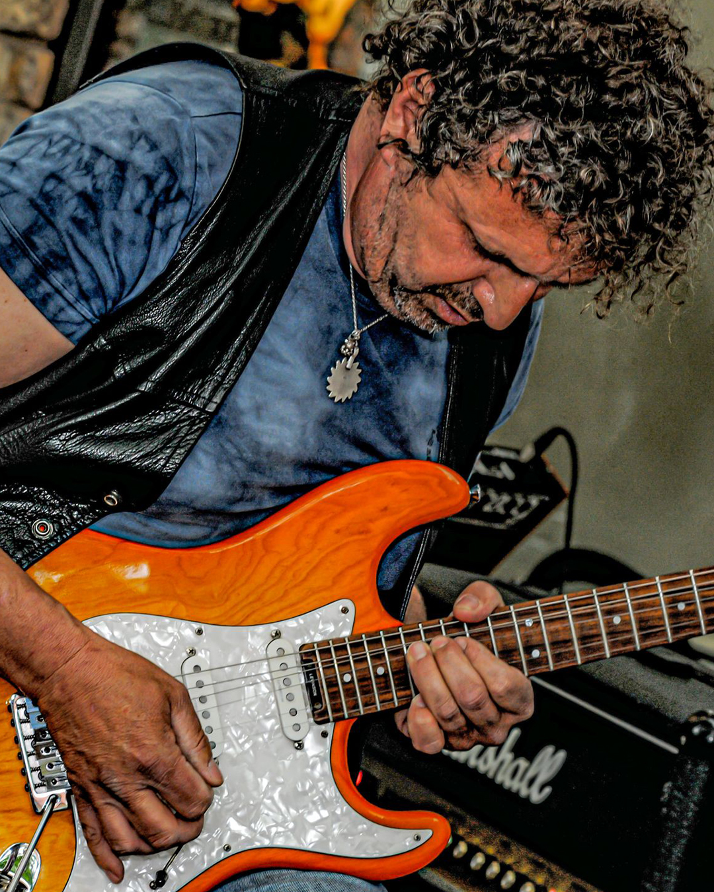
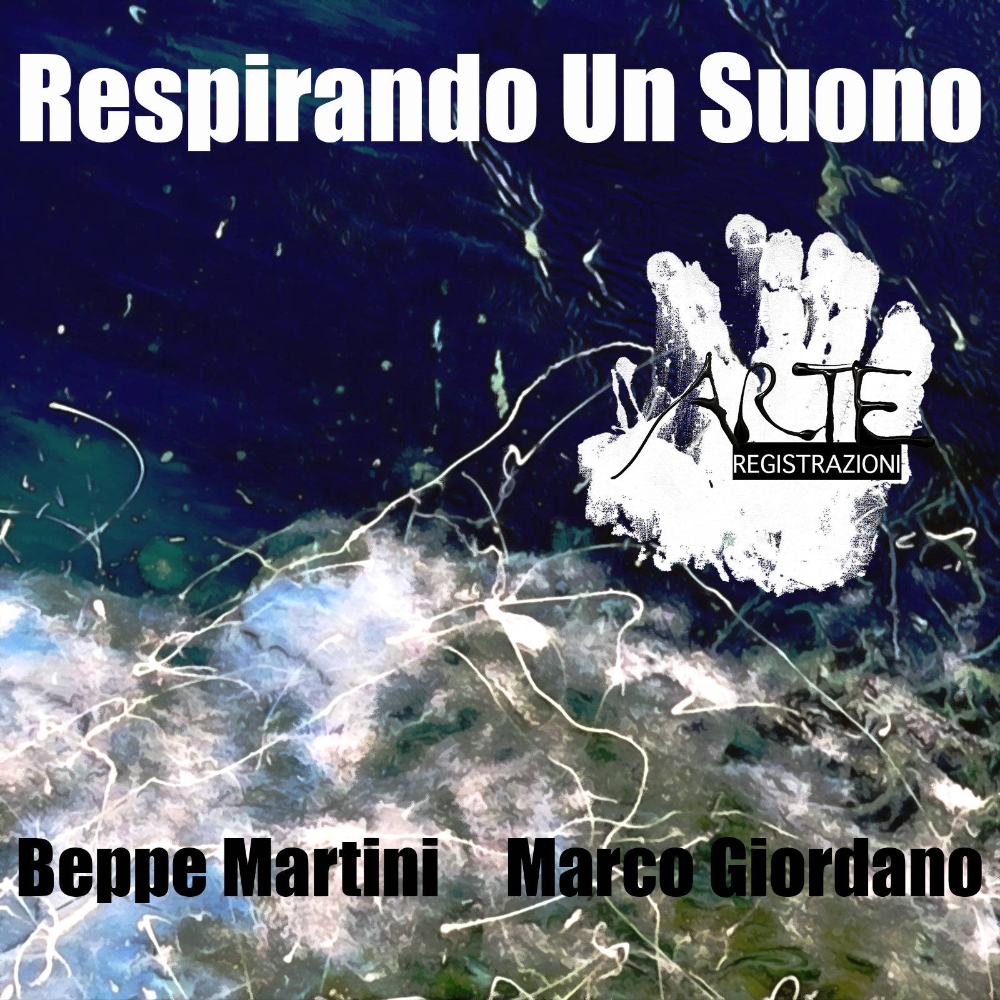
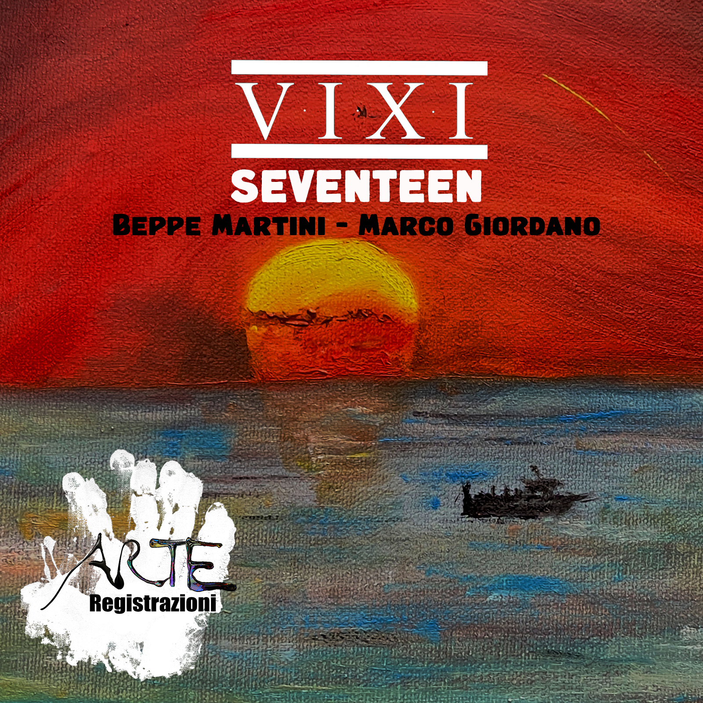

BEPPE MARTINI
Beppe Martini chitarrista muove le sue prime esperienze
in tour con Giorgio Panariello. Nel 1986 entra a fare parte
della band di Zucchero Fornaciari e suona nei tour, anche
nel primo tour europeo. Nel 1989 suona live nel tour oro
incenso e birra fino alle soglie del 90 poi si dedica alla
musica ambient e suona nei club. Nel 2024 suona e
incide per Arte Registrazioni.
in tour con Giorgio Panariello. Nel 1986 entra a fare parte
della band di Zucchero Fornaciari e suona nei tour, anche
nel primo tour europeo. Nel 1989 suona live nel tour oro
incenso e birra fino alle soglie del 90 poi si dedica alla
musica ambient e suona nei club. Nel 2024 suona e
incide per Arte Registrazioni.
Discografia

Titolo: Respirando un suono
Genere: Ambient


Genere: Ambient

Titolo: Seventeen
Genere: Ambient - Jazz
Genere: Ambient - Jazz